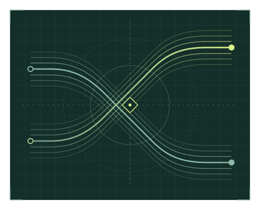

Triage e correzioni Gruppi bancari
Ho svolto assessment applicativi, esaminato i risultati e definito piani di correzione. Ho sviluppato strumenti a supporto delle attività di analisi.
Application Security & DevSecOps Engineer
Affianco i team nelle scelte di architettura e li guido nella progettazione sicura delle applicazioni. Analizzo le minacce e verifico le vulnerabilità e le relative correzioni.

Mi occupo di sicurezza applicativa dal 2021. Seguo test sul codice, sulle applicazioni in esecuzione e sulle dipendenze (SAST, DAST e SCA) e contribuisco a integrare questi controlli nel ciclo di sviluppo.
Ho svolto assessment applicativi, esaminato i risultati e definito piani di correzione. Ho sviluppato strumenti a supporto delle attività di analisi.
Ho svolto attività di threat modeling per contribuire alla progettazione di sistemi secure by design. Ho usato diagrammi dei flussi di dati e STRIDE per individuare le minacce e raccolto le contromisure in un catalogo basato su OWASP ASVS.
Ho seguito controlli prima del rilascio, deroghe e piani di correzione in coordinamento con il CISO, nel contesto di DORA e PCI DSS.
Ho contribuito a digitalizzare il flusso di risposta alle vulnerabilità, dalla presa in carico alla verifica delle correzioni e alla chiusura.
Ho sviluppato l’app iOS e Android con un’altra persona, occupandomi di Flutter e Firebase. L’app ha raggiunto 250.000 utenti registrati. Il mio contributo si è concluso.
Università degli Studi di Verona
Ho progettato un’architettura cloud per un progetto di tracciabilità e anticontraffazione dei prodotti basato sul digital watermarking. Il progetto comprendeva un’app Flutter per iOS e Android e un pannello di gestione in Vue.js.
Una suite in Python e JavaScript per studiare le tecniche di offuscamento e deoffuscamento del codice JavaScript, con esperimenti di machine learning per riconoscere strumenti e tecniche. Laurea magistrale in Ingegneria e Scienze Informatiche, indirizzo cybersecurity, 110 e lode.
Mi interessa aiutare PMI, professionisti e scuole a capire dove l’AI può essere utile e come usarla. Mi piace spiegare come scegliere gli strumenti, integrarli nelle attività di tutti i giorni e verificarne le risposte.
Uno studio di commercialisti potrebbe esplorare scenari di bilancio. Un ristorante potrebbe capire come cambiano i margini al variare dei costi fissi. Partirei da dati di esempio per mostrare come collegare un foglio di calcolo a uno strumento AI, scegliere quali dati condividere e controllare i risultati.
Parliamo di AIScrivimi per un ruolo o una collaborazione in AppSec e DevSecOps, oppure anche solo per una chiacchierata.